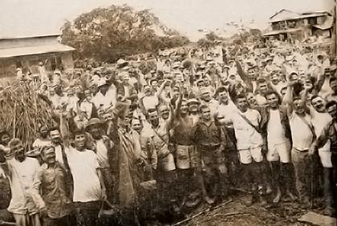

|
j
a v a s c r i p t |
Pg.1/2
January 28, 1945 Speculation was rife today: "Cavite or Corregidor?" Whichever it was, American planes started at 0900 and continued coming all morning — by far the most ambitious bombing yet. From the Menzi porch I clearly saw a huge fire begin, as well as heard a carpet-bombing salvo at 1045 exactly.

Liberated Cabanatuan Prisoners
I have before me the magazine Liberator, the "Luzon Landing Issue," with color-stenciled American and Philippine flags unfurled in the front cover. In existence longer than any other Luzon guerrilla magazine, it calls itself the "Pioneer Guerrilla Paper in the Philippines ... Official organ of President Quezon's Own Guerrillas, II Corps Area, (PQOC) USAFFE." Page 1 has a cartoon: "Key to All Filipino Homes." A tag attached to the key says, "To the Liberation Forces." The article welcomes the men of MacArthur. Page 2: "So ends Our Nightmare" is by Blackwood. Excerpt: For all is almost over now — the hideous dream, the fear, the anxiety, the suspense, the painful waiting, the hell upon earth. The frightful incubus that nightly haunted us in our sleep for more than three years have been driven away. Hereafter, there shall be no more unexpected 'visits' by Colonel Nagahama's bloodhounds. From this day forward, we can say 'goodnight' to our families without the faintest fear.... There shall be no more stupid-looking Nipponese sentries on the road to bow to.... You can talk and discuss freely ... without the necessary precaution of first scrutinizing the faces of those around you. You can listen to any radio program anytime.... Our churches and school buildings will not any more smell of the new odor in East Asia. The days of plenty and prosperity are back. Unlike the starved Sons of Heaven the Americans won't commandeer foodstuffs.... The disease ridden will not languish in bed without medical care because drugs and medicines shall be plentiful again. |
|
|
|
|